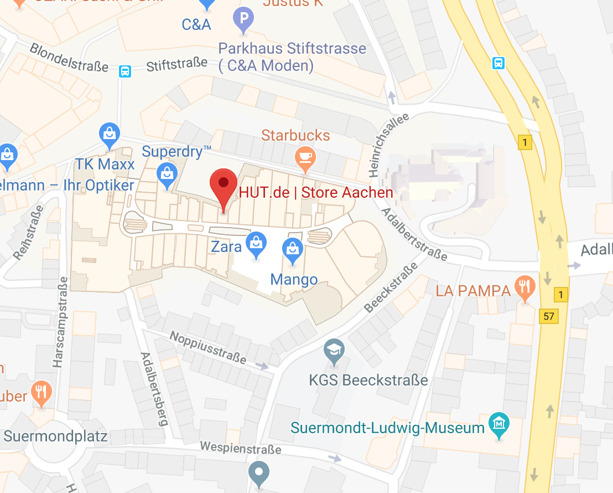

Öffnungszeiten
Montag - Samstag
10:00 - 20:00
Adresse
Hut.de, Store
Aachen
Adalbertstr. 100
52062 Aachen
Besuchen Sie uns im Hut.de Store
Aachen

Bald sind auch die modebewussten Aachener gut „behutet“. Im Oktober 2015 eröffnete unser
HUT.de Store in der Kaiserstadt. Hutliebhaber finden im Erdgeschoss des neuen Einkaufszentrums mitten in
der historischen Altstadt alles, was das Hutherz begehrt. Das Aquis Plaza bietet neben unserem sehr modern
und ansprechend gestalteten Ladenlokal noch viele weitere spannende Einkaufsmöglichkeiten. Das Sortiment
für den HUT.de Store Aachen wurde sorgfältig ausgewählt und ist daher nicht nur besonders vielfältig, sondern
auch äußert exklusiv. Egal ob Sie nach einem eleganten Anlasshut für ein anstehendes Event suchen oder eine
klassische Flatcap von Stetson oder Kangol erstehen wollen – in Aachen erhalten Sie eine große Auswahl an
hochwertigen Hut- und Mützenmodellen sowie Accessoires renommierter Marken.
Die Herren der Schöpfung finden dank des neuen Ladenlokals in Aachen eine exklusive Adresse für alle Wünsche rund um die passende Kopfbedeckung. Neben Hüten und Caps des amerikanischen Kultlabels Stetson gibt es im HUT.de Store auch edle Panamahüte von Lierys sowie stilechte Fedorahüte von Borsalino. Hochwertige Materialien, eine sorgfältige Verarbeitung und ein zeitlos-schönes Design sind das Credo der Marken, die Sie seit Oktober 2015 in Aachen entdecken können.
Natürlich kommen nicht nur männliche Hutliebhaber im neuen Aquis Plaza auf ihre Kosten. Ein exklusives Angebot an stilvollen Damenhüten, festlichen Fascinators und legeren Kappen lässt stilsichere Damen ins Schwärmen geraten. Ausgewählte Marken wie bedacht, Bronté, Gebeana, McBURN oder Seeberger haben sich auf die Herstellung femininer Kopfbedeckungen spezialisiert und bereichern mit ihren verspielten Hutkreationen das Sortiment unseres HUT.de Stores. Das vielfältige Angebot an Kopfbedeckungen wird je nach Saison gezielt durch stimmige Accessoires wie Tücher, Schals oder Handschuhe vervollständigt und bietet den Kunden und Kundinnen so nicht nur eine große Auswahl an schönen Kopfbedeckungen, sondern ein modisches Gesamtpaket.
Besucher aus Aachen und Umgebung erhalten im HUT.de Store die Möglichkeit, in einer entspannten Atmosphäre exklusive Hüte, Kappen und weitere Kopfbedeckungen zu entdecken. Unser fachkundiges Personal berät Sie gerne und findet so garantiert für jeden Kopf den passenden Deckel.
Wir freuen uns auf Ihren Besuch!
Die Herren der Schöpfung finden dank des neuen Ladenlokals in Aachen eine exklusive Adresse für alle Wünsche rund um die passende Kopfbedeckung. Neben Hüten und Caps des amerikanischen Kultlabels Stetson gibt es im HUT.de Store auch edle Panamahüte von Lierys sowie stilechte Fedorahüte von Borsalino. Hochwertige Materialien, eine sorgfältige Verarbeitung und ein zeitlos-schönes Design sind das Credo der Marken, die Sie seit Oktober 2015 in Aachen entdecken können.
Natürlich kommen nicht nur männliche Hutliebhaber im neuen Aquis Plaza auf ihre Kosten. Ein exklusives Angebot an stilvollen Damenhüten, festlichen Fascinators und legeren Kappen lässt stilsichere Damen ins Schwärmen geraten. Ausgewählte Marken wie bedacht, Bronté, Gebeana, McBURN oder Seeberger haben sich auf die Herstellung femininer Kopfbedeckungen spezialisiert und bereichern mit ihren verspielten Hutkreationen das Sortiment unseres HUT.de Stores. Das vielfältige Angebot an Kopfbedeckungen wird je nach Saison gezielt durch stimmige Accessoires wie Tücher, Schals oder Handschuhe vervollständigt und bietet den Kunden und Kundinnen so nicht nur eine große Auswahl an schönen Kopfbedeckungen, sondern ein modisches Gesamtpaket.
Besucher aus Aachen und Umgebung erhalten im HUT.de Store die Möglichkeit, in einer entspannten Atmosphäre exklusive Hüte, Kappen und weitere Kopfbedeckungen zu entdecken. Unser fachkundiges Personal berät Sie gerne und findet so garantiert für jeden Kopf den passenden Deckel.
Wir freuen uns auf Ihren Besuch!
Durchstöbern Sie unsere verschiedenen Stores


Kaufen Sie in unserem Online-Shop ein

Gratis Versand &
Rückversand
Rückversand
1-2 Tage
Lieferzeit
Lieferzeit
100 Tage
Rückgaberecht
Rückgaberecht
Einkaufen bei HUT.de ist schnell, einfach und risikolos. Sowohl der Versand Ihrer Hüte, Mützen, Kopftücher und Kappen als
auch der Rückversand ist für Sie kostenlos.
Darüber hinaus haben Sie ein 100-tägiges Rückgaberecht auf reguläre wie auch reduzierte Ware und Sonderangebote. Für weitere Fragen stehen wir Ihnen gern per E-Mail unter fragen@hut.de zur Verfügung und sind unter der Telefonnummer 0800 4887467 (gebührenfrei aus dem deutschen Festnetz) montags bis freitags von 8.00 Uhr bis 17.00 Uhr direkt für Sie erreichbar.
Das Team von HUT.de wünscht Ihnen viel Spaß beim Einkaufen, im Webshop für den Hut, die Mütze und Kappe!
Darüber hinaus haben Sie ein 100-tägiges Rückgaberecht auf reguläre wie auch reduzierte Ware und Sonderangebote. Für weitere Fragen stehen wir Ihnen gern per E-Mail unter fragen@hut.de zur Verfügung und sind unter der Telefonnummer 0800 4887467 (gebührenfrei aus dem deutschen Festnetz) montags bis freitags von 8.00 Uhr bis 17.00 Uhr direkt für Sie erreichbar.
Das Team von HUT.de wünscht Ihnen viel Spaß beim Einkaufen, im Webshop für den Hut, die Mütze und Kappe!